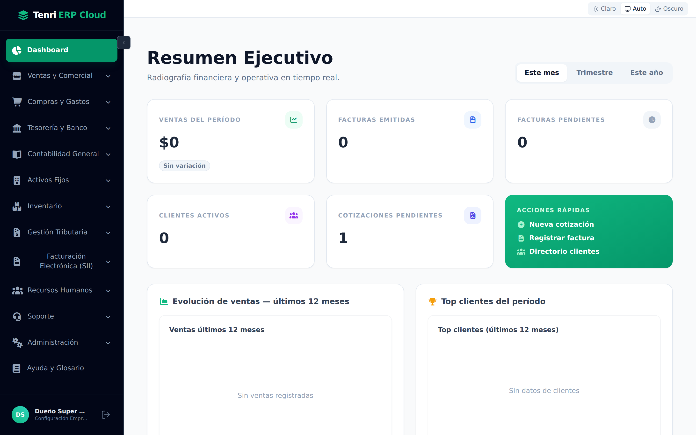
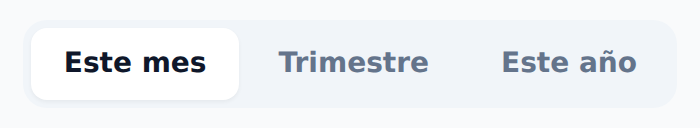
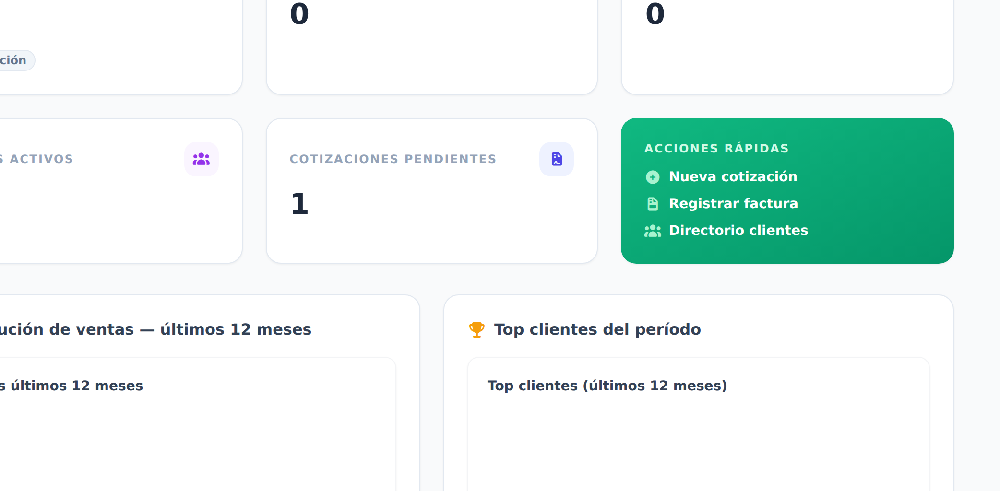
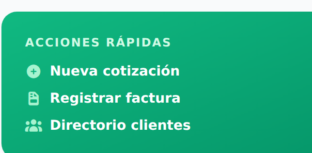
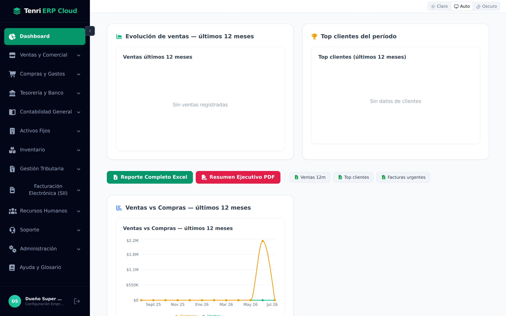
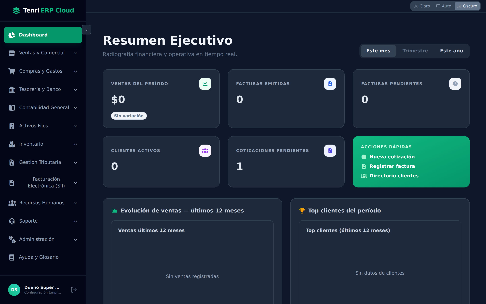

Lea el pulso de su negocio de un vistazo: ventas, facturas, clientes y cotizaciones, con gráficos y acciones rápidas.

La primera pantalla al iniciar sesión.
El Dashboard (o Resumen Ejecutivo) es una radiografía financiera y operativa en tiempo real de su empresa. Reúne, en un solo lugar, los indicadores más importantes, gráficos de tendencia y accesos directos a las tareas más frecuentes. No requiere ninguna configuración: se actualiza solo con la información que usted registra en los demás módulos.
Arriba a la derecha puede cambiar el período que se analiza. Todos los indicadores y comparaciones se recalculan según la opción elegida:

Cinco tarjetas resumen el estado del negocio.

| Indicador | Qué representa |
|---|---|
| Ventas del período | Monto total vendido en el período, con su variación respecto al anterior. |
| Facturas emitidas | Cantidad de documentos de venta emitidos en el período. |
| Facturas pendientes | Documentos por cobrar o por pagar que aún no se han saldado. |
| Clientes activos | Clientes con movimiento en el período. |
| Cotizaciones pendientes | Cotizaciones enviadas que todavía no se han cerrado. |
El panel verde Acciones rápidas lo lleva directo a las tareas más frecuentes, sin navegar por los menús:

Bajo los indicadores encontrará gráficos de tendencia — Evolución de ventas, Top clientes del período y Ventas vs Compras (últimos 12 meses) — que le permiten ver el comportamiento del negocio a lo largo del tiempo. Si un gráfico no tiene datos aún, mostrará un mensaje como “Sin ventas registradas”.

Con un clic puede descargar el Reporte Completo en Excel o el Resumen Ejecutivo en PDF, ideal para reuniones o para su contador. También hay descargas puntuales: ventas de 12 meses, top de clientes y facturas urgentes.
El Dashboard —como todo el sistema— se adapta al tema que usted elija desde la cabecera. En ambientes con poca luz, el modo oscuro mantiene la misma información con mejor contraste.

El Dashboard es su punto de partida cada día: le muestra el estado del negocio y lo lleva directo a la acción.
Ventas, facturas, clientes y cotizaciones, siempre según el período elegido.
Gráficos de 12 meses y exportación a Excel o PDF para compartir.
Cree cotizaciones, registre facturas o abra el directorio en un clic.